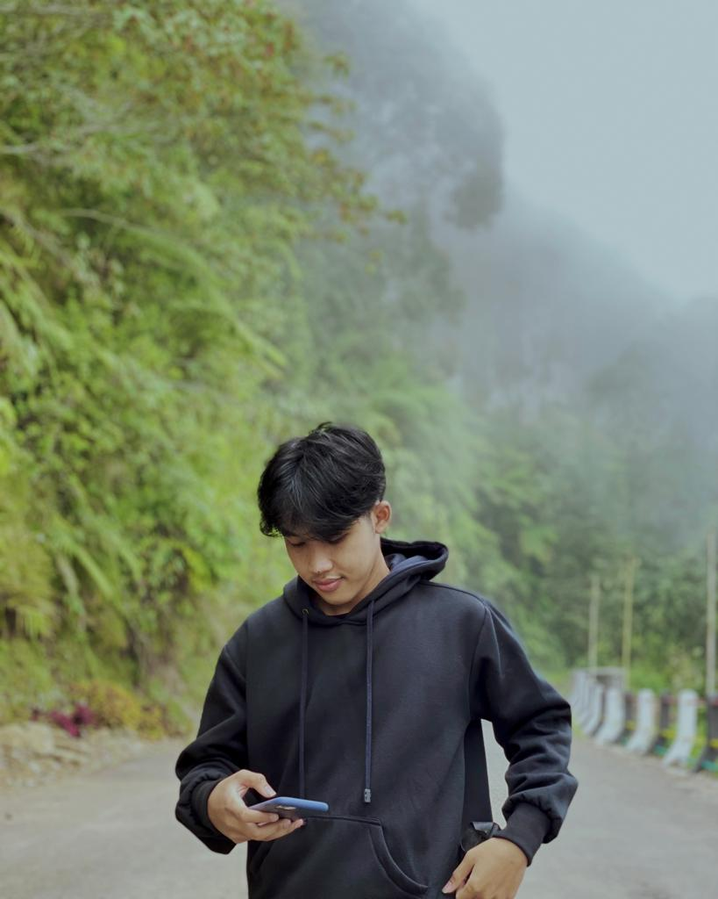

SOCIAL MEDIA
Hi im Bayu Kevin Farindra
I was born in Palembang on August 23, 2001. I am very interested in programming, and I want to become an expert in programming, but I still have a lot to learn about programming.

Institut Teknologi Telkom Surabaya
(ITTS)
Telkom Institute of Technology Surabaya (ITTelkom Surabaya) is the newest campus under the auspices of the Telkom Education Foundation based on Information, Communication and Technology (ICT) with a focus on Maritime, Logistics, and Transportation which was established in 2018. In June 2021, Telkom Institute of Technology Surabaya is recorded to have 11 study programs with 4 new study programs namely Informatics, Data Science, Logistics Engineering, and Digital Business. The campus, which is located in the city of Surabaya, is committed to providing education that is not only of national standard, but also of international standard, especially in the fields of technology, science, engineering, and mathematics studies based on information and communication technology. In terms of quality, ITTelkom Surabaya has been accredited as GOOD by BAN-PT and has international accreditation through ISO 9001:2015 and ISO 21001:2018.
MY PROJECT
E-TRASH
E-Trash is an online waste bank application based on mobile/android applications. This application has various features that can help in the waste processing process to be more effective and efficient. That way the user can sort the waste accordingly with the types of waste available.
This project is my final project in semester 4 of the Information Systems Study Program, Faculty of Information Technology and Business, Surabaya Telkom Institute of Technology.